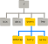
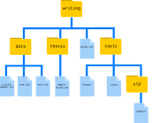

Lecture 2: Introduction to Bash
This lecture introduces you to the Unix command line (bash shell). You’ll learn how to navigate files and directories, manipulate files, and use powerful tools like pipes and pattern matching.
This tutorial is based on The Carpentries “The Unix Shell” lesson, licensed CC-BY 4.0.
Section 1: Setup
Before we dive into bash commands, we need to set up our working environment using GitHub Codespaces.
Step 1: Create a GitHub Account
Use your PSU email because GitHub provides a lot of functionality for free to educational users.
If you don’t already have one, go to github.com and create a free account.
Step 2: Create a New Repository
- Click the + icon in the top right corner and select New repository
- Name your repository
bashing(or any other meaningful name you prefer) - Select Public or Private based on your preference
- Check Add a README file
- Click Create repository
Step 3: Open a Codespace
GitHub Codespaces provides a complete VS Code environment in your browser:
- Go to your newly created repository
- Click the green Code button
- Select the Codespaces tab
- Click Create codespace on main
After a moment, you’ll have a full VS Code environment running in your browser!
Step 4: Open the Terminal
In VS Code (within Codespaces):
- Use the menu: Terminal → New Terminal
- Or use the keyboard shortcut:
Ctrl+`(backtick)
A terminal panel will open at the bottom of the screen. This is where you’ll type bash commands.
Step 5: Verify Everything Works
Let’s test that everything is working. Type the following command and press Enter:
lsYou should see a list of files in your current directory (at minimum, a README.md file). If you see this output, you’re ready to go!
Try one more command:
pwdThis shows your current directory (pwd = “print working directory”). You should see something like /workspaces/bashing.
Section 2: Bash Basics
Background
Humans and computers commonly interact through a graphical user interface (GUI) - clicking icons and using menus. While intuitive, GUIs don’t scale well for repetitive tasks.
Imagine copying the third line from 1000 text files in 1000 directories into a single file. With a GUI, this would take hours of clicking. With the Unix shell, it takes seconds.
The Unix shell is both a command-line interface (CLI) and a scripting language. It allows you to automate repetitive tasks quickly and efficiently.
The Shell
The shell is a program where users type commands. The most popular Unix shell is Bash (Bourne Again SHell).
When you open a terminal, you see a prompt (usually ending in $ or >), indicating the shell is waiting for input:
$When typing commands from examples, do not type the $ - only type the commands that follow it.
Setup Test Data
Let’s download some test data to practice with:
cd ~
mkdir -p Desktop
cd Desktop
wget -c https://github.com/swcarpentry/shell-novice/raw/2929ba2cbb1bcb5ff0d1b4100c6e58b96e155fd1/data/shell-lesson-data.zip
unzip -u shell-lesson-data.zipNow let’s explore this data.
Navigating Files and Directories
The file system organizes data into files and directories (folders). Several commands help us navigate.
At the top is the root directory (/) that holds everything else:

pwd - Print Working Directory
Shows where you are:
pwdls - List Contents
Shows what’s in the current directory:
lsAdd the -F option to classify items (directories get /, executables get *):
ls -FGetting Help
Most commands support --help:
ls --helpOr use the manual pages:
man ls(Press q to quit the manual)
Useful ls Options
| Option | Description |
|---|---|
-l |
Long format (shows permissions, size, date) |
-h |
Human-readable sizes (with -l) |
-a |
Show hidden files (starting with .) |
-t |
Sort by modification time |
-r |
Reverse order |
Try combining options:
ls -lhcd - Change Directory
Move into a directory:
cd shell-lesson-data
ls -FMove up one level with ..:
cd ..
pwdMove to your home directory:
cd
pwdOr use ~ as shorthand for home:
cd ~/Desktop/shell-lesson-dataThe home directory is where user files are stored:

~= home directory.= current directory..= parent directory-= previous directory (trycd -)
Tab Completion
Start typing a path and press Tab to auto-complete:
cd ~/Desktop/shell-l # Press Tab here!Working with Files and Directories
mkdir - Make Directory
Create a new directory:
cd ~/Desktop/shell-lesson-data
mkdir thesis
ls -FCreate nested directories with -p:
mkdir -p project/data project/results
ls -FR projectCreating Files
Create an empty file with touch:
cd thesis
touch draft.txt
lsOr use a text editor. In VS Code, you can: - Click File → New File - Or run code draft.txt to open in the editor
cp - Copy
Copy a file:
cd ~/Desktop/shell-lesson-data
cp notes.txt thesis/notes-backup.txt
ls thesisCopy a directory (requires -r for recursive):
cp -r thesis thesis_backup
lsmv - Move (or Rename)
Rename a file:
mv thesis/draft.txt thesis/quotes.txt
ls thesisMove a file to a different directory:
mv thesis/quotes.txt .
lsrm - Remove
The shell doesn’t have a trash bin. Once deleted, files are gone permanently.
Remove a file:
rm quotes.txt
ls quotes.txtRemove a directory (requires -r):
rm -r thesis_backupUse -i for interactive confirmation:
rm -i notes.txtWildcards
Wildcards let you match multiple files:
| Wildcard | Matches |
|---|---|
* |
Zero or more characters |
? |
Exactly one character |
Examples in molecules/ directory:
cd ~/Desktop/shell-lesson-data/molecules
ls *.pdb # All .pdb files
ls p*.pdb # Files starting with 'p'
ls ???ane.pdb # Three characters + 'ane.pdb'Section 3: More Bash
Now let’s explore more powerful features: pipes, filters, and searching.
Pipes and Filters
wc - Word Count
Count lines, words, and characters:
cd ~/Desktop/shell-lesson-data/molecules
wc cubane.pdb
wc -l *.pdb # Lines onlyRedirecting Output
Save output to a file with >:
wc -l *.pdb > lengths.txt
cat lengths.txt> overwrites files! Use >> to append instead.
sort - Sort Lines
sort -n lengths.txt # Numeric sorthead and tail
View the beginning or end of files:
head -n 3 lengths.txt # First 3 lines
tail -n 2 lengths.txt # Last 2 linesThe Pipe Operator |
Connect commands - output of one becomes input to the next:
wc -l *.pdb | sort -n
wc -l *.pdb | sort -n | head -n 1This is the pipes and filters philosophy: small tools that do one thing well, combined together.

cat - Concatenate
Display file contents:
cat lengths.txtCombine multiple files:
cat file1.txt file2.txt > combined.txtFinding Things
grep - Search File Contents
Find lines matching a pattern:
cd ~/Desktop/shell-lesson-data/writing
grep "not" haiku.txtUseful options:
| Option | Description |
|---|---|
-w |
Match whole words only |
-n |
Show line numbers |
-i |
Case insensitive |
-r |
Search recursively in directories |
-v |
Invert match (lines NOT matching) |
Examples:
grep -n "the" haiku.txt
grep -w "The" haiku.txt
grep -i "the" haiku.txt
grep -r "Yesterday" .find - Search for Files
The find command searches for files by name or properties. Consider this directory structure:

Find files by name or properties:
find . -type f # All files
find . -type d # All directories
find . -name "*.txt" # Files ending in .txtCombining find and grep
Find files, then search within them:
grep "FE" $(find .. -name "*.pdb")The $() runs the command inside and substitutes its output.
Section 4: Wrap Up
Committing Your Work
You’ve created files and directories in your Codespace. Let’s save this work to GitHub using VS Code’s built-in Git support.
Step 1: Open Source Control
Click the Source Control icon in the left sidebar (or press Ctrl+Shift+G).
Step 2: Stage Changes
You’ll see a list of changed files. Click the + icon next to each file to stage it, or click + next to “Changes” to stage all.
Step 3: Write a Commit Message
In the message box at the top, type a brief description of your changes:
Add shell lesson practice filesStep 4: Commit
Click the checkmark icon (or press Ctrl+Enter) to commit your changes.
Step 5: Push to GitHub
Click Sync Changes to push your commits to GitHub. Your work is now saved!
Summary
You’ve learned:
- Navigation:
pwd,ls,cd - File operations:
mkdir,touch,cp,mv,rm - Viewing files:
cat,head,tail - Redirection:
>,>>,| - Processing:
wc,sort,grep,find - Version control: Committing with VS Code
These commands form the foundation for working efficiently on the command line. The more you practice, the more natural they become!
Key Points
- The shell reads commands and runs programs
pwd,ls, andcdnavigate the file systemcp,mv, andrmmanage files and directories*and?are wildcards that match filenames|pipes connect commands togethergrepfinds patterns in files;findfinds files by name